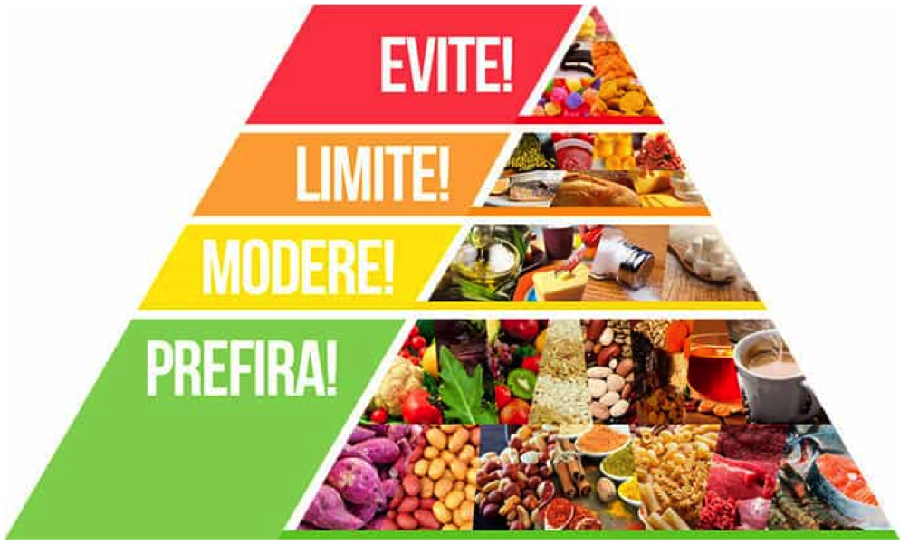

Saúde e bem-estar são dois conceitos distintos que merecem atenção. Estão relacionados, entre
outros aspectos,
com a ausência de doenças e com a satisfação com a vida.
Vida saudável significa realizar escolhas que resultem em uma mente e
um corpo saudáveis.
Além disso, é sinal de que não somos doentes. Para conquistar isso, é importante se alimentar bem e
praticar
exercícios físicos, além de adotar outros hábitos

A pirâmide alimentar é um instrumento importante que ajuda a população a guiar a
alimentação,
nos fazendo
compreender como é uma alimentação saudável. Sua principal função é orientar, não sendo ela responsável
por
fornecer uma dieta a ser seguida.
CONFIRME ABAIXO 6 DICAS PARA MELHORAR A QUALIDADE DE VIDA
LIMENTAR-SE BEM
Procure consumir os alimentos de verdade, ou seja, aqueles que a terra nos dá e que não vem embalados. Prefira
alicerçar sua alimentação com esse tipo de alimento. Frutas, verduras, grãos, oleaginosas e etc, esses
garantirão um equilíbrio de vitaminas, minerais e aminoácidos. E na dúvida evite o consumo exagerado de
determinado alimento, a exemplo do carboidrato, item que pode lhe causar doenças.
Vale ressaltar que quando se fala em alimentação, o acompanhamento de um nutricionista é fundame
HIDRATA-SE
Não há bebida que substitua o consumo de água. Nossos tecidos e células são constituídos em sua grande parte
por
água, ou seja, o organismo precisa de uma ingestão saudável de água, diariamente. Se você sente muita sede
já
pode desconfiar de desidratação. Observe essa questão.
DURMA O SUFIENTE
O sono tem um poder de reparação, ou seja, se você não tem um sono de qualidade seu corpo não teve condições de
se preparar para o outro dia. Estudos afirmam que um sono ininterrupto de 6 a 8 horas é suficiente, para
que o organismo se recupere e faça a sua “faxina” noturna. Contudo, indivíduos que acordam muitas vezes
durante a noite ou acordam cansados, podem ter distúrbios que atrapalham esse regeneração.
FAÇA ATIVIDADE FÍSICA
Praticar atividade física influencia positivamente em diversos aspectos da vida e, principalmente, na qualidade
de vida. O exercício físico vai além da questão estética, proporcionando ao indivíduo melhor
condicionamento físico, disposição, energia, bom humor e resistência. A prática de atividade física,
dependendo do tipo, fortalece o coração, a estrutura óssea e libera substâncias benéficas para a saúde do
cérebro.
EVITE PRODUTO INDUSTRALIZADOS
Complementando a primeira dica, evite o consumo de produtos industrializados e embutidos, como salsichas,
apresuntados, patês prontos e etc. Esses produtos têm altos níveis de sódio e uma série de conservantes e
ingredientes cancerígenos.
TOME CUIDADO COM O AÇÚCAR
O açúcar consumido em excesso pode resultar em diversos problemas à saúde, a exemplo da diabetes e resistência
insulínica. Além disso, o açúcar provoca o aumento de peso. Todo tipo de açúcar deve ser evitado, mas ao
selecionar um para retirar da sua dieta, opte pelo açúcar refinado branco
alimentos saldaveis
A maçã é a primeira da lista dos alimentos saudáveis, pois é rica em fibras, vitamina C e numerosos
antioxidantes. As maçãs são muito saborosas, e perfeitas como lanches, se você estiver com fome, entre as
refeições.
Abacates são diferentes da maioria das frutas, porque eles são
carregados com gorduras saudáveis em vez de carboidratos. Eles são cremosos, saborosos e ricos em fibras,
potássio e vitamina C.
Os ovos estão entre os alimentos mais nutritivos do planeta. Eles foram previamente demonizados por serem
ricos em colesterol, mas novos estudos têm mostrado que eles são perfeitamente seguros e também estão na
lista de alimentos saudáveis.
Carne bovina é uma das melhores fontes de proteína que existem, e carregado com ferro de alta
biodisponibilidade. Escolher os cortes gordos é bom se você estiver em uma dieta de baixo carboidrato.
Peito de frango é pobre em gordura e calorias, mas extremamente rico em proteína. É uma grande fonte de
muitos nutrientes. Mais uma vez, sinta-se livre para comer cortes mais gordos de carne de frango se você não
está comendo muitos carboidratos.
Quais são os alimentos saudáveis?
Como já citamos acima, os alimentos saudáveis são aqueles que conseguem oferecer todos os nutrientes necessários
para que o nosso organismo funcione adequadamente, além de, melhorar a saúde e a qualidade de vida.
De maneira prática, são alimentos que possuem na composição macronutrientes como proteínas, carboidratos e
gorduras, e micronutrientes, que são as vitaminas e os minerais.
Para o aproveitamento desses nutrientes, o ideal é que os alimentos sejam consumidos in natura. Ou então,
minimamente